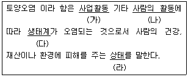

토양환경기사 (2006-05-14 기출문제)
1과목: 토양학개론
1. 염류화 된 토양의 형태 중 Saline soil 에 관한 설명으로 알맞은 것은?
- 토양입자에 흡착되어 있는 나트륨의 양이 적은 염류 토양이다.
- 점토성분이 높고 유기물 함량이 높은 토양에서 나타나기 쉽다.
- 우기에 일어나는 염류집적으로 염류토양이 형성된다.
- 강알칼리성을 나타내며 알칼리 토양이라고도 한다.
(정답률: 알수없음)

2. 다음은 구리(Cu)에 대한 설명이다. 맞지 않는 것은?
- 돼지의 배설물을 토양에 과잉으로 투기하면 구리(Cu)가 집적될 수 있다.
- 토양 중 구리(Cu)함량이 높으면 미량원소가 식물에 흡수될 때 영향을 받는다.
- 토양 중 구리(Cu)농도가 높으면 식물체에 철(Fe)의 과잉현상이 일어난다.
- 토양 중 구리(Cu)는 이동성이 적고 치환되기 어렵다.
(정답률: 알수없음)
3. 토양층위(horizon)에 관한 설명으로 틀린 것은?
- C층 : 토양생성작용을 거의 받지 않는 모재층이다.
- O층 : 토양 내 기상분포에 따라 O1, O2로 나눈다.
- R층 : 단단한 모암이다.
- A1층 : 부식화된 유기물과 광물질이 섞여있는 암흑생의 층이다.
(정답률: 알수없음)
4. 지하수 유동의 기본법칙인 Darcy의 법칙에 관한 설명으로 틀린 것은?
- 지하수의 흐름 속도는 수두 구배에 비례한다는 경험법칙으로 흐름은 층류여야 한다.
- 투수성 기질로 채워진 원통을 통해 나오는 유량은 수두 차에 비례한다.
- 투수성 기질로 채워진 원통을 통해 나오는 유량은 거리에 비례한다.
- 투수성 기질로 채워진 원통을 통해 나오는 유량은 흐름의 단면에 비례한다.
(정답률: 알수없음)
5. 토양오염물질인 BTEX에 포함되지 않는 것은?
- 톨루엔
- 크실렌
- 에틸벤젠
- 에탄올
(정답률: 알수없음)
6. 500cm3 용기를 가득 채운 토양의 용적밀도가 1.2g/cm3 이다. 토양을 물로 포화시킨 후 토양의 질량이 825g 이라면 토양의 공극률은?
- 40%
- 45%
- 50%
- 55%
(정답률: 알수없음)
7. 다음 토양 성분 중 일반적으로 단위질량당 표면적이 가장 큰 것은?
- 굵은 모래(coarse sand)
- 자갈(gravel)
- 미사(silt)
- 점토(clay)
(정답률: 알수없음)
8. 토성(soil texture)의 결정에 사용되는 매체와 가장 거리가 먼 것은?
- 자갈(gravel)
- 모래(sand)
- 실트(silt)
- 점토(clay)
(정답률: 알수없음)
9. 토양수부누의 물리학적 분류 중 '흡습수'에 관한 설명으로 알맞지 않는 것은?
- 상대습도가 높은 공기 중에 풍건 토양을 방치하면 토양입자의 표면에 물이 흡착되는데 이 물으르 흡습수라 한다.
- 사질토에서의 흡습수의양은 무게비로 5~13%, 부식토에서는 80~90%에 달한다.
- 100~110℃ 에서 8~10시간 가열하면 쉽게 제거할 수 있다.
- 흡습수는 pF 4.5 이상으로 강하게 흡착되어 있으므로 식물이 직접 이용할 수 없다.
(정답률: 알수없음)
10. 1970년대 미국에서 유해물질의 위법투기에 의한 대규모의 토양오염 사건은? (단, 슈퍼펀드법 제정의 계기가 됨)
- Love Canal 사건
- Lerkerkert 사건
- Donora 사건
- Meuse 사건
(정답률: 알수없음)
11. 다음의 점토광물 중 양이온교환용량(CEC, meq/100g)이 가장 큰 것은?
- 카올리나이트(kaolinite)
- 몬모릴로나이트(montmorillonite)
- 클로라이트(chlorite)
- 일라이트(illite)
(정답률: 알수없음)
12. ‘피압 대수층에서 단위 수위 강하 혹은 수위 상승에 의해 대수층의 단위부피를 통해 유출되거나 유입되는 물의 부피’를 나타내는 지하수 및 대수층 관련 용어는?
- 비산출율
- 비저류계수
- 수리전도율
- 수두구배계수
(정답률: 알수없음)
13. 다음 중 비점오염원(non point contaminant source)으로 가장 적합한 것은?
- 축산 배수 배출원
- 공단 산업폐수 배출원
- 도로 노면 배수
- 유류저장고
(정답률: 알수없음)
14. 토양의 주요 기능 중 농산물 배지의 관점으로 볼 때 작물 생육에 이상적인 토양의 구성은?
- 고상 40%, 액상 30%, 기상 30%
- 고상 50%, 액상 25%, 기상 25%
- 고상 60%, 액상 30%, 기상 10%
- 고상 70%, 액상 20%, 기상 10%
(정답률: 알수없음)
15. 토양이 수분을 보유하는 힘인 토양수분장력을 나타내는 식은? (단, H : 물기둥 높이(cm), P : 압력(mmHg)
- pF = log H
- pF = log (H/P)
- pF = log P
- pF = log(P/H)
(정답률: 알수없음)
16. 다음 중 지하수가 가장 많이 이용(년 이용량 기준)되는 용도는? (단, 20⑤년 기준)
- 산림용수
- 생활용수
- 공업용수
- 발전용수
(정답률: 알수없음)
17. 토양오염의 특징으로 틀린 것은?
- 오염경로의 다양성
- 오염의 비 인지성 및 타 환경인자와의 영향관계의 모호성
- 수질 또는 대기오염에 비해 오염영향의 광역성
- 피해발현의 완만성
(정답률: 알수없음)
18. 토양오염도 조사(ASTM의 ESA방법)는 1단계 부지환경평가와 2단계 부지환경평가로 나눈다. 다음 중 1단계 부지환경평가 내용과 가장 거리가 먼 것은?
- 작업계획 수립
- 서류 검토
- 현장 조사
- 관계자 면담
(정답률: 알수없음)
19. 하수 슬러지의 토양투기로 인해 토양이 아연 100 ppm, 니켈 50 ppm, 구리 100 ppm으로 오염되었다. 이 토양의 독성을 상대적으로 평가하는 지료로서 아연등량계수는?
- 300 ppm
- 500 ppm
- 700 ppm
- 900 ppm
(정답률: 알수없음)
20. 다음 중 건강 위해성 평가단계와 가장 거리가 먼 것은?
- 유해성 확인
- 노출평가
- 용량-반응평가
- 위험지수 평가
(정답률: 알수없음)
2과목: 토양 및 지하수 오염조사기술
21. 유도결합 플라즈마 발광광도법(ICP)의 조작시 설정 조건에 대한 설명이다. 설명 중 잘못된 것은?
- 고주파출력 : 수용액 시료의 경우 0.8~1.4kw로 설정
- 고주파출력 : 유기 용매 시료의 경우 1.5~2.5kw로 설정
- 가스유량 : 냉각가스는 1.0~3.0 L/min으로 유량 설정
- 가스유량 : 보조가스는 0~21 L/min, 운반가스는 0.5~21 L/min으로 유량 설정
(정답률: 알수없음)
22. 토양오염공정시험방법상 불소 정량방법으로 적절한 것은?
- 원자흡광광도법
- 이온 전극법
- 가스크로마토 그래프법
- 유도결합 플라즈마 발광광도법
(정답률: 알수없음)
23. 부지 내에서 토양오염을 유발시키는 지상저장시설의 끝단으로부터 수평방향으로 2m 떨어진 지점에서 시료를 채취할 경우 채취 깊이로 가장 적절한 것은? (단, 방유조 없음)
- 1m
- 2m
- 3m
- 4m
(정답률: 알수없음)
24. 폴리클로리네이티드비페닐(PCB)의 분석내용으로 가장 알맞은 것은?
- 주로 FID 사용
- 유효측정농도 : 0.001μg/kg이상
- 충진컬럼을 사용할 때 운반가스 유속 : 10~30mL/분
- 확인시험시 마이크로 시린지로 GC에 검액 주입량 : 1~2μL
(정답률: 알수없음)
25. 원자흡광광도법을 사용한 아연 분석에 대한 내용으로 거리가 먼 것은?
- 환류 냉각관 및 비 반송형 흡수용기 사용
- 측정파장은 213.9 nm
- 청색의 킬레이트 화합물을 형성
- 유효측정농도는 0.17mg/kg 이상
(정답률: 알수없음)
26. 기체-고체 가스크로마토 그래프법에 사용하는 분리관의 안지름이 3mm일 때 흡착제 및 담체의 입경 범위는?
- 250~290 μm
- 290~320 μm
- 177~250 μm
- 149~177 μm
(정답률: 알수없음)
27. 이온 전극법에 의한 시안 측정에 관한 설명 중 옳지 않은 것은?
- pH 4~5의 약산성에서 이온전극과 비교전극을 사용 하여 전위를 측정한다.
- 정량범위는 0.1~100mg CN-/L이다.
- 시료와 표준액의 측정시 온도 차는 ±1℃어어야 하고 교반 속도가 일정하여야 한다.
- 표준편차는 5~20%이다.
(정답률: 알수없음)
28. 구리(동, Cu)의 흡광광도법에 의한 분석에 있어 관련이 없는 것은?
- 디에틸디티오카르바민산나트륨
- 황갈색의 킬레이트 화합물
- 디메틸글리옥심
- 초산부틸
(정답률: 알수없음)
29. 토양시료 중 석유계총탄화수소의 정량법에 대한 설명으로 잘못된 것은?
- 검출기는 불꽃 이온화 검출기를 사용한다.
- 디클로로메탄으로 추출하여 정제한다.
- 유효측정농도는 석유계총탄화수소로 0.1mg/kg 이상으로 한다.
- 짝수의 노말알칸(C8~C40) 표준물질의 총면적과 시료피이크의 총면적을 비교하여 정량한다.
(정답률: 알수없음)
30. 다음의 내용 중 공정시험방법에서 명시한 온도에 대한 설명이 잘못 짝지어진 것은?
- 열수 : 약 100℃
- 상온 : 15~25℃
- 온수 : 60~70℃
- 찬곳 : 4℃ 이하
(정답률: 알수없음)
31. 저장물질이 있는 지하매설 저장시설에 대한 기상부 누출검사 적용기준으로 알맞은 것은?
- 기상부 누출검사는 20℃에서 점도 150 cSt 미만, 내용적 10,000L 미만의 액체를 저장하는 지하매설저장시설에 적용한다.
- 기상부 누출검사는 20℃에서 점도 150 cSt 미만, 내용적 100,000L 미만의 액체를 저장하는 지하매설저장시설에 적용한다.
- 기상부 누출검사는 20℃에서 점도 200 cSt 미만, 내용적 10,000L 미만의 액체를 저장하는 지하매설저장시설에 적용한다.
- 기상부 누출검사는 20℃에서 점도 200 cSt 미만, 내용적 100,000L 미만의 액체를 저장하는 지하매설저장시설에 적용한다.
(정답률: 알수없음)
32. 다음은 흡광광도 분석법에 대한 설명이다. 틀린 것은?
- 흡광광도 분석장치의 구성은 광원부 - 파장선택부 - 시료부 - 측광부로 구성된다.
- 흡광도는 투과도 역수의 상용대수이다.
- 가시부와 근적외부의 광원으로는 텅스텐램프, 자외부의 광원으로는 주로 중수소 방전관을 사용한다.
- 측광부의 광전지는 주로 근적외 파장범위의 광전측광에 사용된다.
(정답률: 알수없음)
33. 토양오염도검사를 위한 토양시료의 조제방법에 대해서 설명하였다. 옳지 않은 것은? (단, 수은 이외의 불소 및 중금속 시험용 시료)
- 채취한 토양시료는 법랑제 또는 폴리에틸렌제 밧트(vat)위에 균일한 두께로 하여 직사광선이 닿지 않는 장소에서 통풍이 잘 되게 헤쳐 놓고 풍건하여야 한다.
- 비소, 카드뮴, 납 등 중금속 가용성 함량 분석대상 물질은 눈금간격 2mm의 표준체(10 메쉬)로 체걸음 한다.
- 니켈, 아연 등 중금속 전함량 분석대상 물질은 눈금간격 0.15mm의 표준체(100 메쉬)로 체걸음한다.
- 체걸음한 시료는 균등량(약 100g)을 취하여 원추법에 의해 균일하게 혼합한다.
(정답률: 알수없음)
34. 방울수란 20℃에서 정제수 20방울을 적하할 때이다. 이때의 부피는?
- 약 0.5 mL
- 약 1.0 mL
- 약 5.0 mL
- 약 10 mL
(정답률: 알수없음)
35. pH 표준액의 pH 값이 맞게 연결된 것은? (단, 온도는 섭씨 15도)
- 프틸산염 표준액 : pH 12.81
- 인산염 표준액 : pH 6.90
- 탄산염 표준액 : pH 9.27
- 수산염 표준액 : pH 4.00
(정답률: 알수없음)
36. 토양오염도검사를 위한 토양시료 채취 시 토양시료채취기(sampler)를 사용할 경우 토양 표면의 잡초나 유기물 등 이 물질 층을 제거한 후 채취하는 시료의 양은? (단, 일반지역)
- 약 0.5kg
- 약 1.0kg
- 약 1.5kg
- 약 2.0kg
(정답률: 알수없음)
37. 조제된 산성 pH 표준액과 산화칼슘 흡수관을 부착하여 보관된 염기성 표준액은 각각 몇 개월 이내에 사용하여야 하는가?
- 산성 pH 표준액 : 3개월, 염기성 pH 표준액 : 1개월
- 산성 pH 표준액 : 1개월, 염기성 pH 표준액 : 3개월
- 산성 pH 표준액 : 1개월, 염기성 pH 표준액 : 6개월
- 산성 pH 표준액 : 6개월, 염기성 pH 표준액 : 1개월
(정답률: 알수없음)
38. 검량선에서 얻어진 벤젠의 검출양이 13.5ng이었다. 이 때 토양 중 벤젠농도는? (단, 수분 보정한 토양시료의 건조중량은 4.5g, 사용한 메틸알코올의 양은 10mL, 검액의 주입량은 10μL, 희석 배수는 1)
- 1.0mg/kg
- 2.5mg/kg
- 3.0mg/kg
- 4.5mg/kg
(정답률: 알수없음)
39. 토양오염공정시험법상 크로마토 그래프용 실리카겔(60~70메쉬의 입경, 활성이 없는 것)의 수분 함량기준은?
- 1~2%
- 3~4%
- 5~6%
- 7~8%
(정답률: 알수없음)
40. 다음은 토양오염공정시험방법의 규정에 의한 용어의 설명이다. 옳지 않은 것은?
- 가스체의 농도는 표준상태(0℃, 1기압, 상대습도 0%)로 환산 표시한다.
- “정확히 단다”라 함은 규정된 양의 검체를 취하여 분석용 저울로 0.1mg까지 다는 것을 말한다.
- “항량으로 될 때까지 건조한다.”라 함은 같은 조건에서 1시간 더 건조할 때 전후 무게의 차가 g당 0.3mg 이하 일 때를 말한다.
- 감압 또는 진공이라 함은 따로 규정이 없는 한 15mmH2O 이하를 말한다.
(정답률: 알수없음)
3과목: 토양 및 지하수 오염정화 기술
41. 대상오염물질이 난분해성 경향을 나타내도록 하는 화합물과 가장 거리가 먼 것은?
- 원자의 전하 차가 큰 화합물
- 가지 구조가 많은 화합물
- 물에 대한 용해도가 높은 화합물
- 분자 내에 많은 수의 할로겐원소를 함유하는 화합물
(정답률: 알수없음)
42. 토양증기추출 시스템의 유량을 240m3/min의 유량으로 운전할 때, 배출가스를 처리하기 위하여 요구하는 활성탄 흡착탑의 단면적은? (단, 활성탄 흡착탑의 적정 통과 유속은 1m/sec)
- 1m2
- 2m2
- 3m2
- 4m2
(정답률: 알수없음)
43. 토양세척을 위한 공정 중 분리조에서 보다 세밀한 토양분리가 이루어지는데 굵은 입자와 미세입자의 통상적인 분리 기분범위는?
- 122~74 μm
- 63~74 μm
- 44~56 μm
- 23~44 μm
(정답률: 알수없음)
44. 토양증기추출법(SVE : Soil Vapor Extraction)의 장점이 아닌 것은?
- 비교적 기계 및 장치가 간단하다.
- 지하수의 깊이에 제한을 받지 않는다.
- 총 처리시간을 예측하기 용이하다.
- 다른 시약이 필요 없다.
(정답률: 알수없음)
45. 지중 차단벽인 슬러리월의 수평적 배열 구성이 '부분적 하향 설치' 일 때의 설명으로 틀린 것은?
- 침출수 발생량 제어에 효과적이다.
- 완전 차단보다 설치 가격이 싸다.
- 침출수 이동을 최소화 할 수 있다.
- 지하수 흐름에 대한 정밀한 조사가 필요하다.
(정답률: 알수없음)
46. 토양세척공법 적용 시 발생되는 pH 3인 산성폐수를 pH 7로 중화시키기 위해 중화제로 95% 가성소다를 쓸 경우 산성폐수 1 리터당 가성소다 몇 g이 필요한가? (단, Na 원자량 23)
- 0.0042 g
- 0.0084 g
- 0.042 g
- 0.084 g
(정답률: 알수없음)
47. 오염토양 복원을 위한 원위치 처리방법 적용에 적합한 사항과 거리가 먼 것은?
- 처리량이 많다.
- 오염물의 농도가 높다.
- 처리부지 확보가 곤란하다.
- 처리기간이 길다.
(정답률: 알수없음)
48. 종속영양미생물(화학합성 종속영양)의 탄소원과 에너지원을 알맞게 짝지은 것은?
- CO2 - 무기물의 산화환원반응
- CO2 - 유기물의 산화환원반응
- 유기탄소 - 무기물의 산화환원반응
- 유기탄소 - 유기물의 산화환원반응
(정답률: 알수없음)
49. [고형 폐기물용출법이라고도 하며 증류수 또는 이온수를 이용하여 모노리스 또는 분쇄폐기물로부터의 침출수를 복합적으로 추출하는 방법] [ ]안의 용출능 평가시험 명으로 적절한 것은?
- MWEP 시험법
- MCC-IL 시험법
- CLP 시험법
- EP 시험법
(정답률: 알수없음)
50. 토양증기추출과 비교하여 Bioventing의 장점이라 볼 수 없는 것은?
- 추가적인 영양염류의 공급이 필요 없음
- 장치가 간단하고 설치가 용이함
- 배출가스 처리의 추가비용이 없음
- 적용부지의 범위가 넓음
(정답률: 알수없음)
51. 토양오염을 Air Sparging 방법을 적용하여 처리할 때 영향을 주는 인자의 유리한 조건으로 틀린 것은?
- 대수층종류 : 자유면 대수층
- 대수층의 투수도(cm/s) : 10-3 이상
- 오염물질의 헨리상수(atmㆍm3/mol) : 10-5이상
- 지하수 면까지의 깊이(m) : 1.2 이하
(정답률: 알수없음)
52. 다음 효소 중 식물에 의한 분해(phytodegradation)과정에서 제초제 분해에 주로 관계되는 것은?
- dehalogenase
- laccase
- peroxidase
- nitrilase
(정답률: 알수없음)
53. 바이오벤팅(bioventing)에 관한 설명으로 틀린 것은?
- 진공압이 높을수록 영향반경이 크고 처리시간이 단축된다.
- 진공 정도가 낮을수록 시설비용 및 유지비용이 낮아지고 보다 균일한 처리가 가능하다.
- 오염물질 확산의 잠재적인 위험을 막기 위해 오염부지 주변에 대한 면밀한 모니터링이 요구된다.
- 현장 지반구조 및 오염물 분포에 따른 처리기간의 변동이 적다.
(정답률: 알수없음)
54. 매립지에서 지하수나 지표수를 오염매체로 하는 침출수 처리를 위해 적용할 수 있는 식물로 가장 적절한 것은?
- 호밀
- 포플러나무
- 해바라기
- 미루 나무
(정답률: 알수없음)
55. 오염물질 차단(containment)기술 중 지중차단벽 공정의 종류와 가장 거리가 먼 것은?
- High barriers
- Slurry walls
- Grout curtains
- Steel sheet piling
(정답률: 알수없음)
56. 고형화 및 안정화를 통한 토양오염처리에 관한 설명으로 틀린 것은?
- 휘발성 유기물질은 고정화되기 어렵다.
- 점토토양인 경우 처리효과가 높다.
- 여러 가지 오염물질이 혼합되면 처리시간이 길어진다.
- 유기성 접합제는 용해도가 높은 폐기물이나 유기성 오염물질을 화학적으로 접합시켜 안정화시키는 능력이 크다.
(정답률: 알수없음)
57. 상온에서 수용성 염소계 에테르화합물의 탈 할로겐화 속도상수 실험 결과, PCE의 속도상수는 시간당 0.⑤로 조사 되었다. 1차 분해반응식에 근거하여 초기농도의 40%로 분해 되려면 약몇 시간이 지나야 하는가?
- 약 5 시간
- 약 10 시간
- 약 15 시간
- 약 20시간
(정답률: 알수없음)
58. 투수성 반응벽체(PRB)공정에 관한 설명으로 틀린 것은?
- 깊은 수층과 오염운을 가진 부지에는 부적합하다.
- 오염물의 처리지대로 이동시켜야 하므로 운영, 유지비가 대부분의 저감 기법들보다 많이 소요된다.
- 오염물질이 복합적으로 존재하는 침출수의 경우는 하나의 반응물질만으로 처리하기에는 효율이 높지 않다.
- 투수성 반응벽은 오염된 지하수를 복원하기 위해 반응기질로 채워진 지중벽체이다.
(정답률: 알수없음)
59. 평균농도 30mg/kg의 자일렌(xylen)으로 오염된 토양의 부피가 12,000m3 라면 오염부지 내 존재하는 자일렌의 총 함량은? (단, 토양 bulk density = 1.8g/cm3)
- 412 kg
- 432 kg
- 553 kg
- 648 kg
(정답률: 알수없음)
60. 토양의 열처리기술인 열탈착 기술에 관한 설명으로 틀린 것은?
- 토양으로부터 휘발성 유기화합물, 준 휘발성 유기화합물을 제거할 수 있다.
- 토양으로부터 유기 염소 및 유기인 살충제의 제거가 가능하다.
- 처리하는 동안 다이옥신류 및 푸란이 생성되어 가스처리시설이 필요하다.
- 다양한 수분함량과 오염농도를 가진 여러 종류의 토양에 적용이 가능하다.
(정답률: 알수없음)
4과목: 토양 및 지하수 환경관계법규
61. 다음 중 지하수의 수질기준 설정 항목에 해당하지 않는 것은?
- 구리
- 유기인
- 크실렌
- 질산성질소
(정답률: 알수없음)
62. 오염 원인자가 오염토양개선사업계획의 승인을 얻고자 할 때 '개선사업계획승인신청서' 와 같이 첨부하여야 하는 개선사업계획서에 기재되는 사항과 거리가 먼 것은?
- 총소요 사업비와 분야별 소요 사업비
- 사업기간 및 사업지역
- 사후관리의 방법 및 기간
- 재원조달방법
(정답률: 알수없음)
63. 토양관련전문기관 중 토양오염조사기관으로 지정하기 위한 시설(실험실)기준은? (단, 실험실 안에 사무실이 있는 경우에는 당해 사무실의 면적을 포함하여 산정한다.)
- 180 제곱미터 이상
- 280 제곱미터 이상
- 380 제곱미터 이상
- 480 제곱미터 이상
(정답률: 알수없음)
64. 도로지역에서 시안의 토양오염우려기준(단위:mg/kg)은?
- 2
- 20
- 60
- 120
(정답률: 알수없음)
65. 오염토양개선사업의 종류와 가장 거리가 먼 것은?
- 오염된 수로의 준설사업
- 오염토양의 정화시설사업
- 오염물질의 흡수력이 강한 식물식재사업
- 오염토양의 위생적 매립사업
(정답률: 알수없음)
66. 특정토양오염관리대상시설의 설치자는 토양오염 검사에 의하여 토양관련기관으로부터 통보받은 토양오염검사결과를 몇 년간 보존하여야 하는가?
- 1년
- 2년
- 3년
- 5년
(정답률: 알수없음)
67. 시장ㆍ군수는 지하수 개발 이용 허가를 받은 자의 신청에 의하여 유효기간의 연장을 허가할 수 있다. 이 경우 그 연장기간은 몇 년인가?
- 2년
- 3년
- 5년
- 10년
(정답률: 알수없음)
68. 다음 중 특정토양오염관리대상시설의 종류로 틀린 것은?
- 특정토양오염물질 제조 및 저장시설
- 석유류의 제조 및 저장시설
- 유독물의 제조 및 저장시설
- 송유관시설
(정답률: 알수없음)
69. 전국적인 토양오염실태를 파악하기 위해 환경부장관이 고시하는 측정망설치계획에 포함되어야 하는 사항이 아닌 것은?
- 측정망 설치시기
- 측정항목 및 방법
- 측정망 배치도
- 측정지점의 위치 및 면적
(정답률: 알수없음)
70. 특정토양오염관리대상시설의 설치자가 특정토양오염관리대상시설별로 설치하여야 하는 토양오염방지시설과 가장 거리가 먼 것은?
- 특정토양오염관리대상시설의 부식, 산화방지를 위한 처리를 하거나 토양오염물질이 누출되지 아니하도록 하기 위하여 누출방지성능을 가진 재질로 사용하거나 이중벽탱크 등 누출방지시설을 설치할 것
- 특정토양오염관리대상시설중 지하에 매설되는 저장시설의 경우에는 토양오염물질이 누출되는 것을 감지하거나 누출 여부를 확인할 수 있는 측정기기 등의 시설을 설치할 것
- 특정토양오염관리대상시설로부터 토양오염물질이 누출될 경우에 대비하여 오염확산방지 또는 독성 저감 등의 조치에 필요한 시설을 설치할 것
- 특정토양오염관리대상시설로부터 토양오염물질이 누출에 대비하기 위한 예비조 운영 등 토양오염물질 누출시 세부지침을 마련하여 시설에 비치할 것
(정답률: 알수없음)
71. 토양오염대책지역에서 행하는 오염토양개선사업을 지도, 감독하는 토양관련전문기관은?
- 시ㆍ도보건환경연구원
- 환경관리공단
- 국립환경과학원
- 농촌진흥청소속 및 농업과학연구원
(정답률: 알수없음)
72. 다음 중 토양보전기본계획에 포함되어야 하는 사항과 가장 거리가 먼 것은?
- 토양보전에 관한 시책방향
- 토양오염의 현황ㆍ진행상황 및 장래예측
- 토양오염의 방지에 관한 사항
- 토양오염의 정화비용 및 예산에 관한 사항
(정답률: 알수없음)
73. 특정토양오염관리대상시설 부지에서 토양시료를 채취하려한다. 부지 내에는 2개의 60만리터 용량의 저장시설이 200미터 간격으로 위치한다면 총 시료채취 지점 수는?
- 2개
- 4개
- 6개
- 8개
(정답률: 알수없음)
74. 시장ㆍ군수ㆍ구청장은 특정토양오염관리대상시설의 설치자가 토양오염방지시설을 설치하지 아니하거나 그 기준에 적합하지 아니한 경우 또는 토양오염검사결과를 우려 기준을 초과하는 경우에는 그 시정 등 필요한 조치를 명할 수 있다. 만일 명령을 이행하지 아니하거나 그 명령을 이행하였더라도 당해 시설의 부지 및 그 주변지역의 토양오염의 정도가 우려 기준 이내로 내려가지 아니한 경우에는 그 특정토양오염관리대상시설의 사용중지를 명할 수 있다. 이 사용중지 명령을 이행하지 아니한 자에 대한 벌칙 기준은?
- 1년 이하 징역 또는 2천만원 이하의 벌금
- 1년 이하 징역 또는 1천만원 이하의 벌금
- 2년 이하 징역 또는 2천만원 이하의 벌금
- 2년 이하 징역 또는 1천만원 이하의 벌금
(정답률: 알수없음)
75. 지하수의 수질보전 등에 관한 규칙상 수질검사대상이 되는 농업용수 및 어업용수용 지하수 양수 능력 기준은?
- 1일 10톤 이상
- 1일 20톤 이상
- 1일 50톤 이상
- 1일 100톤 이상
(정답률: 알수없음)
76. 토양 정화업을 등록하기 위한 장비에 관한 설명으로 틀린 것은?
- 지하수위측정기 1대(깊이 150m 이상 측정이 가능할 것)
- 현장용 수질측정기 1식(수소이온농도, 수온, 전기전도도, 용존산소 및 산화환원 전위의 측정이 가능할 것)
- 휴대용 가스측정장비 1식(휘발성 유기화합물질, 산소, 이산화탄소 및 메탄의 측정이 가능할 것)
- 시료채취기 1대(깊이 6m 이상 시료채취가 가능 할 것)
(정답률: 알수없음)
77. 토양정화업자는 정화현장에 오염토양의 정화공정도 및 정화일지를 작성하여 비치하여야 하며 정화일지는 몇 년간 보관하여야 하는가?
- 1년
- 2년
- 3년
- 5년
(정답률: 알수없음)
78. 공장용지에서 구리의 토양오염대책기준(단위 : mg/kg)은?
- 500
- 1000
- 2000
- 3000
(정답률: 알수없음)
79. 다음은 토양환경보전법에 정의된 '토양오염'을 나타낸 것이다. 밑줄 친 부분 중 잘못된것은?

- 사업활동
- 사람의 활동
- 생태계
- 상태
(정답률: 알수없음)
80. 지하수를 공업용수로 사용할 때 수소이온농도의 수질기준은?
- pH 4.5~9.5
- pH 5.0~9.0
- pH 5.8~8.5
- pH 6.8~7.5
(정답률: 알수없음)